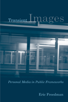

<body bgcolor="#FFFFFF" text="#000000" link="#0000FF" vlink="#CC0000" alink="#CC0000"><center><hr width="350" size="1" align="center" noshade>Whither the life of online images?<hr width="350" size="1" align="center" noshade><p><a href="https://cdcshoppingcart.uchicago.edu/Cart/ChicagoBook.aspx?ISBN=9781439903261&&PRESS=temple" target="_top">Buy this book!</a> | <a href="https://cdcshoppingcart.uchicago.edu/Cart/Cart.aspx?PRESS=temple" target="_top">View Cart</a> | <a href="https://cdcshoppingcart.uchicago.edu/Cart/Cart.aspx?PRESS=temple" target="_top">Check Out</a></p><p></p></center><!--none//--><h1>Transient Images</h1>
<H2>Personal Media in Public Frameworks</H2>
<h3>Eric Freedman</h3>
<P>cloth 1-4399-0326-3 $80.50, Nov 10, <FONT COLOR=#990033>Available</FONT>
<br>paper 1-4399-0327-1 $33.95, Nov 10, <FONT COLOR=#990033>Available</FONT>
<br>Electronic Book 1-4399-0328-X $33.95 <FONT COLOR=#990033>Available</FONT>
<BR> 230 pp
6x9
4&nbsp;figures 31&nbsp;halftones
</P><BLOCKQUOTE><I>"</I>Transient Images<I> is a beautifully written meditation on the public life of portraiture across the myriad technologies, platforms, and formats that constitute contemporary visual culture. It takes us on a tour through diverse sites of personal imaging and biographical narrative, from milk carton images of missing children to therapeutic reality TV shows like Intervention, changing the way we look in the process. An erudite theorist, an authoritative researcher, and a writer blessed with a mordant wit, Freedman uncovers the poetry and pain that linger in those areas of today�s image world where we are often afraid to look."</i> <br>&#151;<b>Anna McCarthy</b>, author of<i> The Citizen Machine</i></I></BLOCKQUOTE>
<p>In this probing study, Eric Freedman focuses on what images from photography, mobile communications, and the Internet reveal about looking. Exploring subjectivity by critically examining the look, he elaborates on the nature of the photographic frame and its relation to interpretive practices. Freedman scrutinizes what he calls "technobiography"&mdash;a life written through technology, and considers the movement of personal images into public spaces. He considers how we, as autobiographical agents, are simultaneously engaged with and inscribed by information technology.
</p><p>
All of the chapters in <em>Transient Images</em> explore Freedman's interest in examining how media technologies activate particular notions of self and community. He provides examples that address trauma&mdash;pictures of missing children on milk cartons and episodes of the reality series Intervention&mdash;as well as the strategies behind creating and distributing personal advertisements on the Internet. <em>Transient Images</em> draws out the tensions that exist in images circulating in the digital era. </p>
<BR>&nbsp;<h2>Excerpt</h2><P>Excerpt available at <a href="http://www.temple.edu/tempress">www.temple.edu/tempress</a></p>
<BR>&nbsp;<h2>Reviews</h2>
<p><i>"The whole world seems to have become one huge slide night, as the means of communication shift from professionals to amateurs. How can we make sense of the personalization of public imagery, as private imagery goes public? Eric Freedman is our excellent guide via </i>Transient Images<i>, a well-written, fascinating series of investigations into Middle America's love of representing itself."</i><br>&#151<b>Toby Miller</b>, author of <i>Makeover Nation</i>
<p><i>"</i>Transient Images<i> is an original and imaginative manuscript which brings together seemingly diverse phenomena�from images of missing children on milk cartons to those of traumatic events taken by mobile phone cameras. It is well-researched and beautifully written, with creative use of primary sources. The chapters on cyberdating and social networks are especially strong. Freedman�s nuanced position on digital culture is a welcome corrective to both overly utopian and dystopian discourses on new media technology. His conclusions are grounded in the concrete reading and textual analysis of the case studies."</i><br>&#151<b>Diane Waldman</b>, Associate Professor in the Department of Media, Film, and Journalism Studies at the University of Denver, and co-editor (with Janet Walker) of <i>Feminism and Documentary</i>
<p><i>"Freedman's category of 'life technobiographic' or 'technobiography' is an innovation in understanding how the image has corresponded with societal reevaluations from the simpler time of 'Kodak as you go' to the current crush of reality television and YouTube. Summing Up: Highly recommended."</I><br>&#151<b>
<i>Choice </b></i>
<p><i>"Freedman's elegant new book�</i>Transient Images<i> is lyrically written, meditative, and palpably intelligent.... Freedman attends carefully to the precise desires, pleasures, and risks that unfold in each example. The work is enriched by its strategic selection of a broad range of everyday cultural artifacts and practices, as well as by a richly interdisciplinary methodology.... Significantly, the book offers a fresh take on thinking through the privileged role that networked and digital images play in relation to trauma.... Freedman has provided us with a lively new methodology for understanding our images and our selves in an era of transience." </I><br>&#151<b>
<i>Cinema Journal</b></i>
<BR>&nbsp;<h2>Contents</h2><P>
<p>Acknowledgments
<br>Introduction: Picturetown, USA
<br>1. �Have You Seen This Child?� From Milk Carton to <i>Mise en Abyme</i>
<br>2. Private Photos/Public Traumas: National Memories and Moving Images
<br>3. Trauma and the Cellular Imaginary
<br>4. Intervention and the Kodak Moment
<br>5. The Architectures of Cyberdating
<br>6. The Social Fabric of Images
<br>Notes
<br>Bibliography
<br>Index
</P><BR>&nbsp;<H2>About the Author(s)</H2>
<table><tr><td valign="top"><img src="/tempress/authors/2116_au1.gif" height="90" width="75"></td><td width="100%" valign="middle"><p><b>Eric Freedman</b> is a Professor and Dean of the Knight School of Communication at Queens University of Charlotte.</P></td></tr></table>
<BR><H2>Subject Categories</H2>
<p><A HREF="/tempress/mass_media.html" TARGET="_top">Mass Media and Communications</a>
<BR><A HREF="/tempress/cultural.html" TARGET="_top">Cultural Studies</a>
<BR><A HREF="/tempress/american.html" TARGET="_top">American Studies</a>
</p>
<p align="center"><a href="https://cdcshoppingcart.uchicago.edu/Cart/ChicagoBook.aspx?ISBN=9781439903261&&PRESS=temple" target="_top">Buy this book!</a> | <a href="https://cdcshoppingcart.uchicago.edu/Cart/Cart.aspx?PRESS=temple" target="_top">View Cart</a> | <a href="https://cdcshoppingcart.uchicago.edu/Cart/Cart.aspx?PRESS=temple" target="_top">Check Out</a></p><p><font face="Arial" size="1"><a href="copyright.html" onMouseOver="window.status='Web Copyright Policy';return true;" onMouseOut="window.status=''" title="Web Copyright Policy">&copy;</a> 2015 <a href="http://www.temple.edu" target="new" onMouseOver="window.status='Link to Temple University home page';return true;" onMouseOut="window.status=''" title="Link to Temple University home page">Temple University</a>. All Rights Reserved. http://www.temple.edu/tempress/titles/2116_reg.html</font></p>